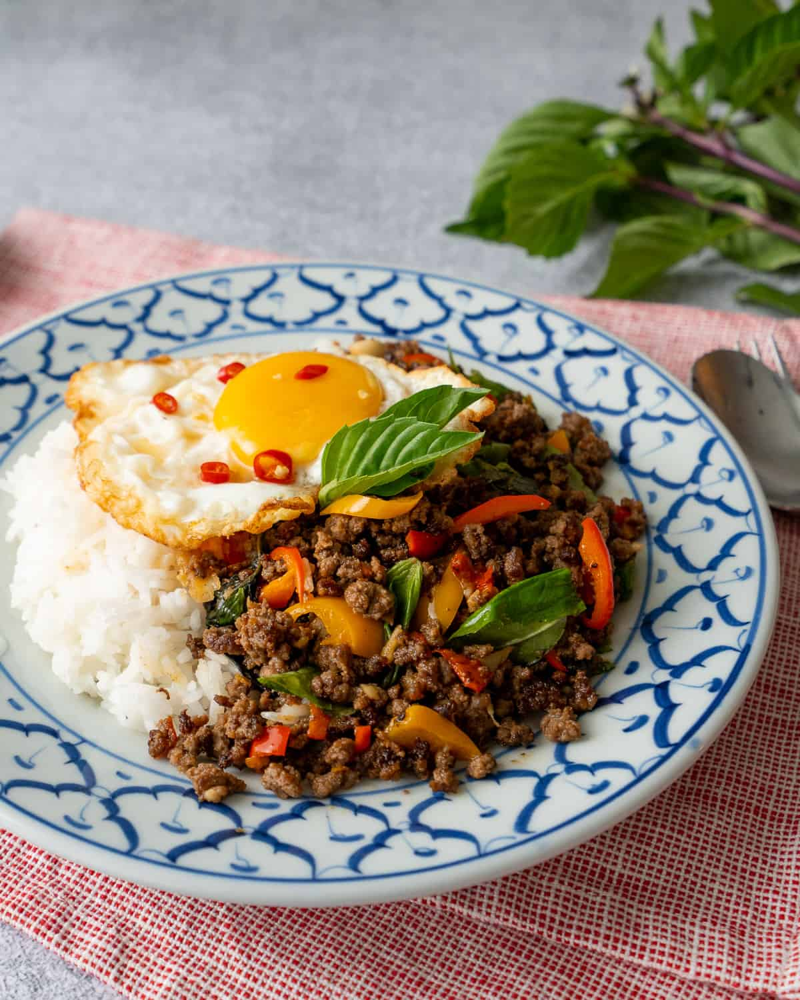

Pad Thai

Description
Pad Kra Pao, also known as Thai Basil Stir-Fry, is a beloved Thai dish renowned for its bold flavors and aromatic profile.
This delectable stir-fry features a savory blend of minced meat, typically pork, chicken, or beef,
stir-fried with fresh Thai holy basil, garlic, chili peppers, and soy sauce.
Recipe
- 100 g pork
- 1 cup holy basil leaves
- 3 garlic cloves, peeled
- 3 red chilies
- 1 tablespoon Oyster Sauce
- 1 tablespoon Fish Sauce
- ½ tablespoon sugar
- 1 tablespoon water
- 2 tablespoons oil for frying
PROCEDURE
- Mix water, sugar, fish sauce, and oyster sauce together and set aside..
- If you have a mortar and pestle, pound garlic and chilies together. Otherwise you can chop them or slice thinly.
- Heat a non-stick saucepan over high heat and add the oil. When the oil is hot, add chilies and garlic and stir-fry till fragrant, about 10 seconds.
- Add pork and stir continuously for few minutes. When it is starting to look like cooked, add sauce mix and stir-fry till the sauce coats the meat evenly.
If it is too dry, you can add a small splash of water.
- Add basil leaves and stir-fry for few more seconds until wilted, then turn off the heat immediately.
- Serve Pad Kra Pao over rice, topped with a Thai-style crispy fried egg.
Reference source